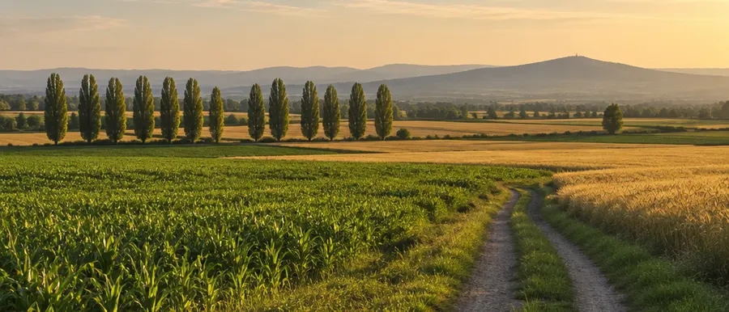
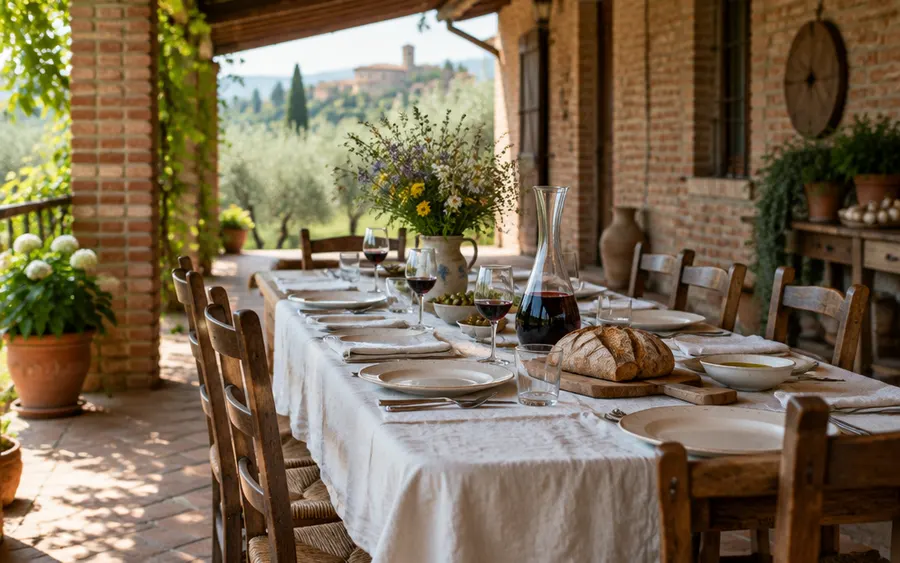
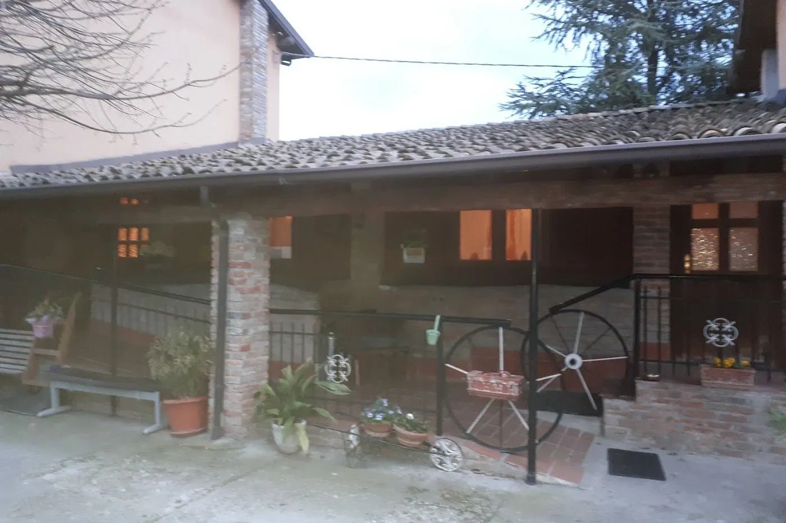

Si prenota
Cuciniamo per chi ci ha chiamato. Una telefonata e ci mettiamo d’accordo su giorno, ora e numero di persone.
0383 364971Sito dimostrativo
 Chiama
Chiama
Azienda agricola biologicaStrada Scortica 15 · VogheraSi mangia su prenotazione
Un agriturismo di famiglia, in una cascina di mattoni e legno. Cucina di casa, il vino di nostra produzione e una corte dove fermarsi con calma.
Prenota: 0383 364971Cosa si mangia
4,4 su Google · 105 recensioni (ottobre 2026)

Cuciniamo per chi ci ha chiamato. Una telefonata e ci mettiamo d’accordo su giorno, ora e numero di persone.
0383 364971Piatti semplici e abbondanti, come si mangia in cascina, con il vino di nostra produzione.
La cucinaFuori c’è spazio: la corte, il portico, il prato. Anche per tavolate, compleanni e battesimi.
La cascina
Non c’è un menu stampato: dipende dalla stagione e da quello che dà l’azienda. Dicci in quanti siete e cosa vi piace, al resto pensiamo noi.
4,4 su Google · 105 recensioni (ottobre 2026)
Ottimo cibo e proprietari gentilissimi, accoglienti e molto disponibili.
Abbiamo chiamato domenica mattina per un pranzo improvvisato di 15 persone e si sono subito organizzati per riceverci.
Ampio spazio fuori, ottima sala adatta ad ospitare eventi.
Frasi copiate dalle recensioni pubblicate sulla scheda Google dell’agriturismo.
